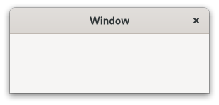

Class
GtkWindow
Description [src]
class Gtk.Window : Gtk.Widget
implements Gtk.Accessible, Gtk.Buildable, Gtk.ConstraintTarget, Gtk.Native, Gtk.Root, Gtk.ShortcutManager {
/* No available fields */
}A GtkWindow is a toplevel window which can contain other widgets.

Windows normally have decorations that are under the control of the windowing system and allow the user to manipulate the window (resize it, move it, close it,…).
GtkWindow as GtkBuildable
The GtkWindow implementation of the GtkBuildable interface supports
setting a child as the titlebar by specifying “titlebar” as the “type”
attribute of a <child> element.
CSS nodes
window.background [.csd / .solid-csd / .ssd] [.maximized / .fullscreen / .tiled]
├── <child>
╰── <titlebar child>.titlebar [.default-decoration]
GtkWindow has a main CSS node with name window and style class .background.
Style classes that are typically used with the main CSS node are .csd (when client-side decorations are in use), .solid-csd (for client-side decorations without invisible borders), .ssd (used by mutter when rendering server-side decorations). GtkWindow also represents window states with the following style classes on the main node: .maximized, .fullscreen, .tiled (when supported, also .tiled-top, .tiled-left, .tiled-right, .tiled-bottom).
GtkWindow subclasses often add their own discriminating style classes,
such as .dialog, .popup or .tooltip.
Generally, some CSS properties don’t make sense on the toplevel window node, such as margins or padding. When client-side decorations without invisible borders are in use (i.e. the .solid-csd style class is added to the main window node), the CSS border of the toplevel window is used for resize drags. In the .csd case, the shadow area outside of the window can be used to resize it.
GtkWindow adds the .titlebar and .default-decoration style classes to the
widget that is added as a titlebar child.
Accessibility
Until GTK 4.10, GtkWindow used the GTK_ACCESSIBLE_ROLE_WINDOW role.
Since GTK 4.12, GtkWindow uses the GTK_ACCESSIBLE_ROLE_APPLICATION role.
Actions
GtkWindow defines a set of built-in actions:
- default.activate: Activate the default widget.
- window.minimize: Minimize the window.
- window.toggle-maximized: Maximize or restore the window.
- window.close: Close the window.
Functions
gtk_window_set_auto_startup_notification
Sets whether the window should request startup notification.
Instance methods
gtk_window_get_destroy_with_parent
Returns whether the window will be destroyed with its transient parent.
gtk_window_get_handle_menubar_accel
Returns whether this window reacts to F10 key presses by activating a menubar it contains.
since: 4.2
gtk_window_get_hide_on_close
Returns whether the window will be hidden when the close button is clicked.
gtk_window_get_titlebar
Returns the custom titlebar that has been set with gtk_window_set_titlebar().
gtk_window_present_with_time
Presents a window to the user in response to an user interaction.
deprecated: 4.14
gtk_window_set_destroy_with_parent
If setting is TRUE, then destroying the transient parent of window
will also destroy window itself.
gtk_window_set_handle_menubar_accel
Sets whether this window should react to F10 key presses by activating a menubar it contains.
since: 4.2
gtk_window_set_hide_on_close
If setting is TRUE, then clicking the close button on the window
will not destroy it, but only hide it.
gtk_window_set_transient_for
Dialog windows should be set transient for the main application
window they were spawned from. This allows window managers to e.g.
keep the dialog on top of the main window, or center the dialog
over the main window. gtk_dialog_new_with_buttons() and other
convenience functions in GTK will sometimes call
gtk_window_set_transient_for() on your behalf.
gtk_window_unfullscreen
Asks to remove the fullscreen state for window, and return to
its previous state.
Methods inherited from GtkAccessible (19)
gtk_accessible_announce
Requests the user’s screen reader to announce the given message.
since: 4.14
gtk_accessible_get_accessible_parent
Retrieves the accessible parent for an accessible object.
since: 4.10
gtk_accessible_get_accessible_role
Retrieves the accessible role of an accessible object.
gtk_accessible_get_at_context
Retrieves the accessible implementation for the given GtkAccessible.
since: 4.10
gtk_accessible_get_bounds
Queries the coordinates and dimensions of this accessible.
since: 4.10
gtk_accessible_get_first_accessible_child
Retrieves the first accessible child of an accessible object.
since: 4.10
gtk_accessible_get_next_accessible_sibling
Retrieves the next accessible sibling of an accessible object.
since: 4.10
gtk_accessible_get_platform_state
Query a platform state, such as focus.
since: 4.10
gtk_accessible_reset_property
Resets the accessible property to its default value.
gtk_accessible_reset_relation
Resets the accessible relation to its default value.
gtk_accessible_reset_state
Resets the accessible state to its default value.
gtk_accessible_set_accessible_parent
Sets the parent and sibling of an accessible object.
since: 4.10
gtk_accessible_update_next_accessible_sibling
Updates the next accessible sibling of self.
since: 4.10
gtk_accessible_update_property
Updates a list of accessible properties.
gtk_accessible_update_property_value
Updates an array of accessible properties.
gtk_accessible_update_relation
Updates a list of accessible relations.
gtk_accessible_update_relation_value
Updates an array of accessible relations.
gtk_accessible_update_state
Updates a list of accessible states. See the GtkAccessibleState
documentation for the value types of accessible states.
gtk_accessible_update_state_value
Updates an array of accessible states.
Methods inherited from GtkBuildable (1)
Methods inherited from GtkNative (5)
gtk_native_get_renderer
Returns the renderer that is used for this GtkNative.
gtk_native_get_surface
Returns the surface of this GtkNative.
gtk_native_get_surface_transform
Retrieves the surface transform of self.
gtk_native_realize
Realizes a GtkNative.
gtk_native_unrealize
Unrealizes a GtkNative.
Methods inherited from GtkRoot (3)
gtk_root_get_display
Returns the display that this GtkRoot is on.
gtk_root_get_focus
Retrieves the current focused widget within the root.
gtk_root_set_focus
If focus is not the current focus widget, and is focusable, sets
it as the focus widget for the root.
Properties
Gtk.Window:handle-menubar-accel
Whether the window frame should handle F10 for activating menubars.
since: 4.2
Properties inherited from GtkWidget (34)
Gtk.Widget:can-focus
Whether the widget or any of its descendents can accept the input focus.
Gtk.Widget:can-target
Whether the widget can receive pointer events.
Gtk.Widget:css-classes
A list of css classes applied to this widget.
Gtk.Widget:css-name
The name of this widget in the CSS tree.
Gtk.Widget:cursor
The cursor used by widget.
Gtk.Widget:focus-on-click
Whether the widget should grab focus when it is clicked with the mouse.
Gtk.Widget:focusable
Whether this widget itself will accept the input focus.
Gtk.Widget:halign
How to distribute horizontal space if widget gets extra space.
Gtk.Widget:has-default
Whether the widget is the default widget.
Gtk.Widget:has-focus
Whether the widget has the input focus.
Gtk.Widget:has-tooltip
Enables or disables the emission of the ::query-tooltip signal on widget.
Gtk.Widget:height-request
Override for height request of the widget.
Gtk.Widget:hexpand
Whether to expand horizontally.
Gtk.Widget:hexpand-set
Whether to use the hexpand property.
Gtk.Widget:layout-manager
The GtkLayoutManager instance to use to compute the preferred size
of the widget, and allocate its children.
Gtk.Widget:margin-bottom
Margin on bottom side of widget.
Gtk.Widget:margin-end
Margin on end of widget, horizontally.
Gtk.Widget:margin-start
Margin on start of widget, horizontally.
Gtk.Widget:margin-top
Margin on top side of widget.
Gtk.Widget:name
The name of the widget.
Gtk.Widget:opacity
The requested opacity of the widget.
Gtk.Widget:overflow
How content outside the widget’s content area is treated.
Gtk.Widget:parent
The parent widget of this widget.
Gtk.Widget:receives-default
Whether the widget will receive the default action when it is focused.
Gtk.Widget:root
The GtkRoot widget of the widget tree containing this widget.
Gtk.Widget:scale-factor
The scale factor of the widget.
Gtk.Widget:sensitive
Whether the widget responds to input.
Gtk.Widget:tooltip-markup
Sets the text of tooltip to be the given string, which is marked up with Pango markup.
Gtk.Widget:tooltip-text
Sets the text of tooltip to be the given string.
Gtk.Widget:valign
How to distribute vertical space if widget gets extra space.
Gtk.Widget:vexpand
Whether to expand vertically.
Gtk.Widget:vexpand-set
Whether to use the vexpand property.
Gtk.Widget:visible
Whether the widget is visible.
Gtk.Widget:width-request
Override for width request of the widget.
Properties inherited from GtkAccessible (1)
Signals
Gtk.Window::keys-changed
Emitted when the set of accelerators or mnemonics that
are associated with window changes.
deprecated: 4.10
Signals inherited from GtkWidget (13)
GtkWidget::destroy
Signals that all holders of a reference to the widget should release the reference that they hold.
GtkWidget::direction-changed
Emitted when the text direction of a widget changes.
GtkWidget::hide
Emitted when widget is hidden.
GtkWidget::keynav-failed
Emitted if keyboard navigation fails.
GtkWidget::map
Emitted when widget is going to be mapped.
GtkWidget::mnemonic-activate
Emitted when a widget is activated via a mnemonic.
GtkWidget::move-focus
Emitted when the focus is moved.
GtkWidget::query-tooltip
Emitted when the widget’s tooltip is about to be shown.
GtkWidget::realize
Emitted when widget is associated with a GdkSurface.
GtkWidget::show
Emitted when widget is shown.
GtkWidget::state-flags-changed
Emitted when the widget state changes.
GtkWidget::unmap
Emitted when widget is going to be unmapped.
GtkWidget::unrealize
Emitted when the GdkSurface associated with widget is destroyed.
Signals inherited from GObject (1)
GObject::notify
The notify signal is emitted on an object when one of its properties has its value set through g_object_set_property(), g_object_set(), et al.
Class structure
struct GtkWindowClass {
GtkWidgetClass parent_class;
void (* activate_focus) (
GtkWindow* window
);
void (* activate_default) (
GtkWindow* window
);
void (* keys_changed) (
GtkWindow* window
);
gboolean (* enable_debugging) (
GtkWindow* window,
gboolean toggle
);
gboolean (* close_request) (
GtkWindow* window
);
}No description available.
Class members
parent_class: GtkWidgetClassThe parent class.
activate_focus: void (* activate_focus) ( GtkWindow* window )Activates the current focused widget within the window.
activate_default: void (* activate_default) ( GtkWindow* window )Activates the default widget for the window.
keys_changed: void (* keys_changed) ( GtkWindow* window )Signal gets emitted when the set of accelerators or mnemonics that are associated with window changes.
enable_debugging: gboolean (* enable_debugging) ( GtkWindow* window, gboolean toggle )Class handler for the
GtkWindow::enable-debuggingkeybinding signal.close_request: gboolean (* close_request) ( GtkWindow* window )Class handler for the
GtkWindow::close-requestsignal.
Virtual methods
Gtk.WindowClass.enable_debugging
Class handler for the GtkWindow::enable-debugging
keybinding signal.
Gtk.WindowClass.keys_changed
Signal gets emitted when the set of accelerators or mnemonics that are associated with window changes.